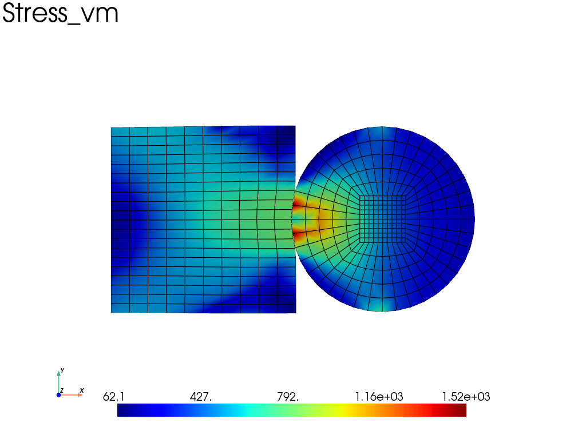
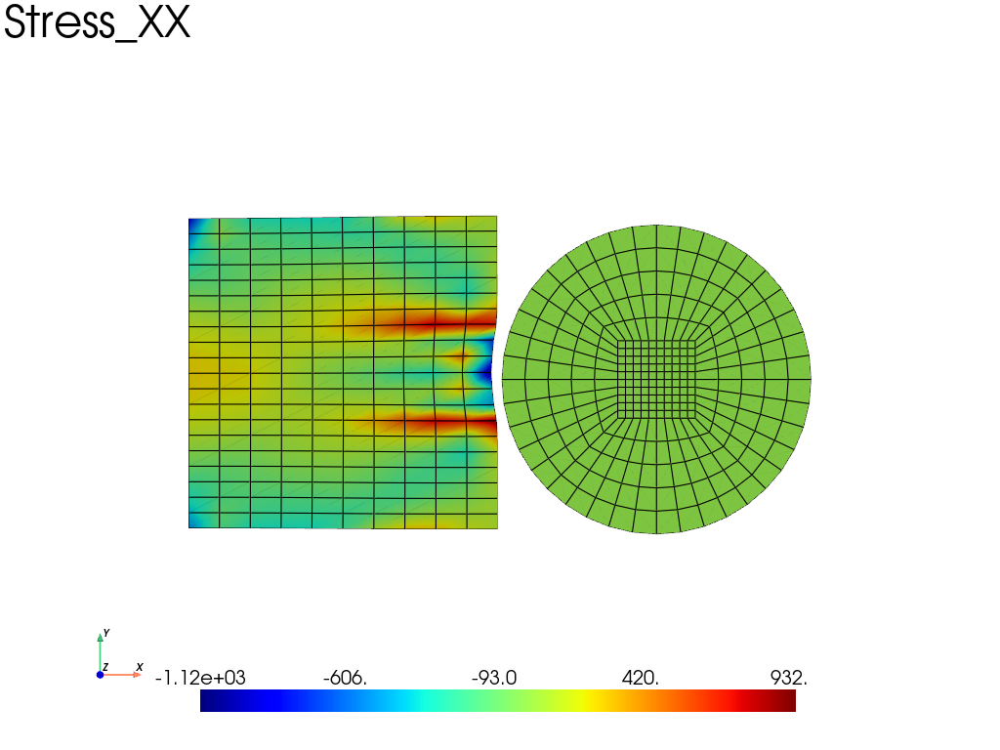

Note
Go to the end to download the full example code.
Contact between a disk and a rectangle (IPC)
This example demonstrates contact between a disk and a rectangle using the IPC (Incremental Potential Contact) barrier method. The disk is pressed into the rectangle and then unloaded.
import fedoo as fd
import numpy as np
fd.ModelingSpace("2D")
NLGEOM = "UL" # updated lagrangian
# parameters
h = 1
L = 1
E = 200e3
nu = 0.3
alpha = 1e-5
# mesh of the rectangle
mesh_rect = fd.mesh.rectangle_mesh(
nx=11, ny=21, x_min=0, x_max=L, y_min=0, y_max=h, elm_type="quad4", name="Domain"
)
mesh_rect.element_sets["rect"] = np.arange(0, mesh_rect.n_elements)
# mesh of a disk (small gap for IPC barrier method)
mesh_disk = fd.mesh.disk_mesh(radius=L / 2, nr=6, nt=6, elm_type="quad4")
mesh_disk.nodes += np.array(
[1.51, 0.48]
) # translate the disk (0.01 gap from rectangle)
mesh_disk.element_sets["disk"] = np.arange(0, mesh_disk.n_elements)
# put the two meshes in a single mesh (change the element indices)
mesh = fd.Mesh.stack(mesh_rect, mesh_disk)
# node sets for boundary conditions
nodes_left = mesh.find_nodes("X", 0)
nodes_bc = mesh.find_nodes("X>1.5")
nodes_bc = list(set(nodes_bc).intersection(mesh.node_sets["boundary"]))
# IPC contact assembly
surf = fd.mesh.extract_surface(mesh)
contact = fd.constraint.IPCContact(
mesh,
surface_mesh=surf,
dhat=0.005,
dhat_is_relative=False,
use_ccd=True,
)
# define material for rectangle (elasto-plastic law)
Re = 300
k = 1000 # 1500
m = 0.3 # 0.25
props = np.array([E, nu, alpha, Re, k, m])
material_rect = fd.constitutivelaw.Simcoon("EPICP", props, name="ConstitutiveLaw")
# define material for disk (elastic isotropic)
material_disk = fd.constitutivelaw.ElasticIsotrop(50e3, nu, name="ConstitutiveLaw")
# define an heterogeneous constitutive law
material = fd.constitutivelaw.Heterogeneous(
(material_rect, material_disk), ("rect", "disk")
)
# stress equilibrium weak form and related assembly
wf = fd.weakform.StressEquilibrium(material, nlgeom=NLGEOM)
solid_assembly = fd.Assembly.create(wf, mesh)
# add contact to the global assembly
assembly = fd.Assembly.sum(solid_assembly, contact)
# define non linear analysis
pb = fd.problem.NonLinear(assembly)
# add some output that are automatically saved
results = pb.add_output("contact_example", ["Disp", "Stress", "Strain", "P", "Fext"])
# boundary conditions
pb.bc.add("Dirichlet", nodes_left, "Disp", 0)
pb.bc.add("Dirichlet", nodes_bc, "Disp", [-0.05, 0.025])
# set newton-raphson convergence criterion
pb.set_nr_criterion("Displacement", tol=5e-3, max_subiter=15)
# solve load step
pb.nlsolve(
dt=0.05, tmax=1, update_dt=True, print_info=1, interval_output=0.1, dt_min=1e-8
)
n_iter_load = results.n_iter
# change boundary condition (unload)
pb.bc.remove(-1) # remove last boundary condition
pb.bc.add("Dirichlet", nodes_bc, "Disp", [0, 0])
# solve unload step
pb.nlsolve(
dt=0.05, tmax=1, update_dt=True, print_info=1, interval_output=0.1, dt_min=1e-8
)
Iter 1 - Time: 0.05000 - dt 0.05000 - NR iter: 2 - Err: 0.00000
Iter 2 - Time: 0.10000 - dt 0.06250 - NR iter: 2 - Err: 0.00000
Iter 3 - Time: 0.16250 - dt 0.06250 - NR iter: 3 - Err: 0.00000
Iter 4 - Time: 0.20000 - dt 0.07812 - NR iter: 3 - Err: 0.00041
Iter 5 - Time: 0.27813 - dt 0.07812 - NR iter: 5 - Err: 0.00451
Iter 6 - Time: 0.30000 - dt 0.09766 - NR iter: 4 - Err: 0.00222
Iter 7 - Time: 0.39766 - dt 0.09766 - NR iter: 8 - Err: 0.00313
Iter 8 - Time: 0.40000 - dt 0.09766 - NR iter: 3 - Err: 0.00024
Iter 9 - Time: 0.49766 - dt 0.09766 - NR iter: 9 - Err: 0.00347
Iter 10 - Time: 0.50000 - dt 0.09766 - NR iter: 3 - Err: 0.00174
Iter 11 - Time: 0.59766 - dt 0.09766 - NR iter: 12 - Err: 0.00382
Iter 12 - Time: 0.60000 - dt 0.09766 - NR iter: 4 - Err: 0.00209
Iter 13 - Time: 0.69766 - dt 0.09766 - NR iter: 8 - Err: 0.00345
Iter 14 - Time: 0.70000 - dt 0.09766 - NR iter: 3 - Err: 0.00059
Iter 15 - Time: 0.79766 - dt 0.09766 - NR iter: 4 - Err: 0.00176
Iter 16 - Time: 0.80000 - dt 0.12207 - NR iter: 3 - Err: 0.00070
Iter 17 - Time: 0.90000 - dt 0.12207 - NR iter: 4 - Err: 0.00207
Iter 18 - Time: 1.00000 - dt 0.12207 - NR iter: 4 - Err: 0.00305
Iter 19 - Time: 0.05000 - dt 0.05000 - NR iter: 6 - Err: 0.00457
Convergence Failed - dt 0.05000 - NR iter: 15 - Err: 0.73757
Iter 20 - Time: 0.06250 - dt 0.01250 - NR iter: 3 - Err: 0.00362
Iter 21 - Time: 0.07812 - dt 0.01562 - NR iter: 3 - Err: 0.00087
Iter 22 - Time: 0.09766 - dt 0.01953 - NR iter: 3 - Err: 0.00183
Iter 23 - Time: 0.10000 - dt 0.02441 - NR iter: 3 - Err: 0.00056
Iter 24 - Time: 0.12441 - dt 0.02441 - NR iter: 3 - Err: 0.00309
Iter 25 - Time: 0.15493 - dt 0.03052 - NR iter: 3 - Err: 0.00410
Iter 26 - Time: 0.19308 - dt 0.03815 - NR iter: 3 - Err: 0.00254
Iter 27 - Time: 0.20000 - dt 0.04768 - NR iter: 3 - Err: 0.00087
Iter 28 - Time: 0.24768 - dt 0.04768 - NR iter: 3 - Err: 0.00178
Iter 29 - Time: 0.30000 - dt 0.05960 - NR iter: 4 - Err: 0.00085
Iter 30 - Time: 0.35960 - dt 0.05960 - NR iter: 4 - Err: 0.00287
Iter 31 - Time: 0.40000 - dt 0.07451 - NR iter: 3 - Err: 0.00060
Iter 32 - Time: 0.47451 - dt 0.07451 - NR iter: 3 - Err: 0.00000
Iter 33 - Time: 0.50000 - dt 0.09313 - NR iter: 2 - Err: 0.00000
Iter 34 - Time: 0.59313 - dt 0.09313 - NR iter: 2 - Err: 0.00000
Iter 35 - Time: 0.60000 - dt 0.11642 - NR iter: 2 - Err: 0.00000
Iter 36 - Time: 0.70000 - dt 0.11642 - NR iter: 2 - Err: 0.00000
Iter 37 - Time: 0.80000 - dt 0.11642 - NR iter: 2 - Err: 0.00000
Iter 38 - Time: 0.90000 - dt 0.11642 - NR iter: 2 - Err: 0.00000
Iter 39 - Time: 1.00000 - dt 0.11642 - NR iter: 2 - Err: 0.00000
Load and unload states
Plot the von Mises stress at maximum loading, then the normal stress after
unloading. With multiplot=True, each figure keeps an independent copy of
its deformed geometry, so loading the second saved state does not update the
first figure.
results.load(n_iter_load - 1) # load state at the end of load
results.plot("Stress", "vm", "Node", scale=1, multiplot=True)
results.load(-1) # load state at the end of unload
results.plot("Stress", "XX", "Node", scale=1, multiplot=True)


Total running time of the script: (0 minutes 4.801 seconds)